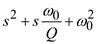

Step 1:
Refer to Figure 16.33 (b) in the textbook for the high pass filter op-amp circuit.
The characteristic equation of Figure 16.33 (b) and Figure 16.29 are same.
Assume the op-amp has finite gain,  , then the characteristic equation for the loop is,
, then the characteristic equation for the loop is,
Write the transfer function of the high pass filter op-amp circuit.
Substitute the transfer function in the characteristic equation.
Divide with on both sides.
Step 2:
Now, the characteristic equation is,

Compare the characteristic equation with the standard second order system .
The resonant frequency of high-pass filter is,
The quality factor is,
Step 3:
The sensitivity of  to the capacitance A is,
to the capacitance A is,
As the resonant frequency is independent of the gain, so, its sensitivity to gain is zero.
Thus, the sensitivity of resonant frequency to gain is,  .
.
The sensitivity of quality factor to gain is,
Differentiate the quality factor with respect to 
For and, the, thus
Thus, the sensitivity of quality factor to gain is, .